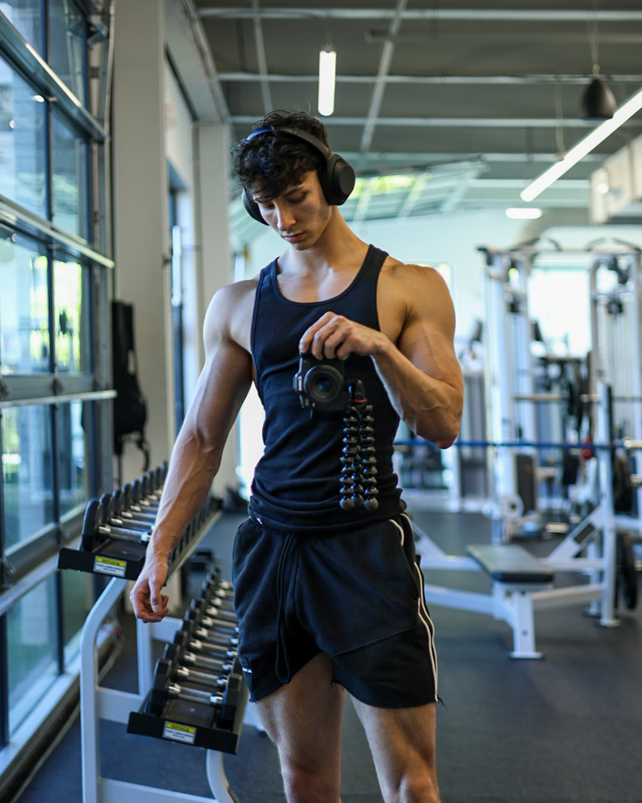

Cooking is another passion of mine – from crafting high-protein meal bowls to experimenting with creative flavors, I’m always in the kitchen exploring ways to nourish both body and soul.

I’m also an avid photographer, with a love for capturing moments through portrait photography and sharing my work with a respectable following I've built on Instagram. My passion extends to editing, camera work, and videography for YouTube, where I enjoy bringing stories to life.

Balancing my lifelong curiosity with competitive online gaming sessions and a good book, I find fulfillment in both the creative and disciplined aspects of life. Life’s a grind – but it’s one I’m committed to mastering.